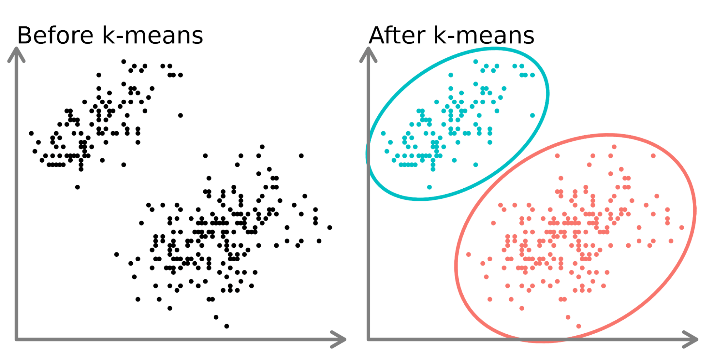

iPAS AI 應用規劃師(初級) 模擬考_001
命題大綱 (AI 應用規劃師 初級)
載入中...
總題數：
0
根據 Alan Turing 的定義，圖靈測試 的核心在於評估機器的？
答案解析
(C) 正確。參考L11101。圖靈測試旨在測試機器是否能展現出與人類無法區分的對話行為，重點在於行為的模仿，而非其內部計算、儲存或學習機制。
像 Netflix 電影推薦系統或 Spotify 音樂推薦系統，屬於AI的哪個分類？
答案解析
(A) 正確。參考L11101。弱人工智慧指的是專精於執行特定任務的AI。推薦系統專注於根據用戶偏好推薦內容，屬於此類。AGI具備廣泛認知能力，ASI超越人類智能，目前皆未實現。
下列何者最接近通用人工智慧 (AGI) 的概念？
答案解析
(B) 正確。參考L11101。通用人工智慧 (AGI) 的核心特徵是其跨領域的通用性和類人的學習與應用能力，而非侷限於特定任務。
(A)、(C)、(D) 均為弱人工智慧的範例，專精於特定任務。
(A)、(C)、(D) 均為弱人工智慧的範例，專精於特定任務。
歐盟 AI 法案 (EU AI Act) 的主要立法目標不包含下列何者？
答案解析
(C) 不包含。參考L11102。雖然歐盟 AI 法案具有域外效力，影響全球企業，但其立法目標是規範歐盟市場內的AI應用，並未設定統一全球標準的目標。(A)、(B)、(D) 均為其明確的立法目標。
在歐盟 AI 法案的風險分類中，用於關鍵基礎設施（如交通、能源）管理的AI系統通常被歸類為？
答案解析
(B) 正確。參考L11102。歐盟 AI 法案將可能對健康、安全或基本權利產生重大風險的AI應用列為高風險，關鍵基礎設施管理即為其中一例。這類系統需要遵守最嚴格的合規要求。

若一家公司開發的聊天機器人 (Chatbot) 在歐盟市場提供服務，根據歐盟 AI 法案，該公司最主要的義務是？
答案解析
(C) 正確。參考L11102。聊天機器人通常被歸類為受限風險 (Limited risk)。此類別AI系統的主要義務是確保透明度，必須明確告知使用者他們正在與一個AI系統互動，而不是人類。
(A) 和 (B) 是高風險 AI 的主要義務。
(D) 聊天機器人並非禁止類 AI。
(A) 和 (B) 是高風險 AI 的主要義務。
(D) 聊天機器人並非禁止類 AI。
根據歐盟 AI 法案，若企業違反禁止類 AI的規定，可能面臨的最高罰款為？
答案解析
(C) 正確。參考L11102。違反禁止類 AI（如社會信用評分、心理操控）的規定屬於最嚴重的情況，將面臨最高級別的罰款，即3500 萬歐元或企業全球年營業額的 7%，以較高者為準。其他風險級別的違規罰款較低。
下列何者是歐盟 AI 法案針對高風險 AI系統提出的合規要求之一？
答案解析
(A) 正確。參考L11102。高風險 AI系統需要遵守一系列嚴格的合規要求，其中包括：建立風險管理系統、確保高數據品質、詳細的技術文件、記錄保存、透明度與資訊提供、適當的人類監督，以及穩健性、準確性和安全性。
(B) 僅告知是用於受限風險 AI。
(C) 法案未強制要求開源。
(D) 高風險 AI 強調需要人類監督。
(B) 僅告知是用於受限風險 AI。
(C) 法案未強制要求開源。
(D) 高風險 AI 強調需要人類監督。
一種透過加密受害者檔案，並要求支付贖金才能解密的惡意軟體，被稱為什麼？
答案解析
(C) 正確。參考L11203。勒索軟體的典型特徵就是加密受害者的重要檔案，使其無法存取，然後要求支付贖金（通常是加密貨幣）以換取解密金鑰。
(A) 間諜軟體主要目的是秘密收集使用者資訊。
(B) 木馬程式偽裝成合法軟體，誘騙使用者執行，以植入後門或竊取資料。
(D) 蠕蟲是能自我複製並透過網路傳播的惡意程式。
(A) 間諜軟體主要目的是秘密收集使用者資訊。
(B) 木馬程式偽裝成合法軟體，誘騙使用者執行，以植入後門或竊取資料。
(D) 蠕蟲是能自我複製並透過網路傳播的惡意程式。
駭客利用尚未被軟體開發商發現或修補的安全漏洞發動攻擊，這種攻擊稱為什麼？
答案解析
(C) 正確。參考L11203。零日攻擊 (Zero-Day) 指的就是利用一個軟體或硬體中已知但尚未被修補（開發商還沒有發布修補程式，或者用戶尚未安裝）的安全漏洞 (Vulnerability) 進行的攻擊。"零日"指的是開發商沒有時間（零天）來應對這個威脅。
攻擊者在使用者瀏覽的網頁中注入惡意 JavaScript 腳本，當其他使用者瀏覽該網頁時，腳本會在其瀏覽器中執行，可能用於竊取 Cookie 或會話資訊。這是哪種攻擊？
答案解析
(B) 正確。參考L11203。XSS 攻擊的核心就是將惡意腳本注入到受信任的網站中。當其他用戶訪問該網站時，這些腳本會在用戶的瀏覽器上執行，使得攻擊者能夠繞過同源策略 (Same-Origin Policy)，竊取用戶的 Cookie、Session Token 或執行其他惡意操作。
(A) SQL Injection 是針對後端資料庫的攻擊。
(C) DNS Spoofing 是篡改 DNS 紀錄，將用戶導向假網站。
(D) 側信道攻擊是利用硬體洩漏的資訊。
(A) SQL Injection 是針對後端資料庫的攻擊。
(C) DNS Spoofing 是篡改 DNS 紀錄，將用戶導向假網站。
(D) 側信道攻擊是利用硬體洩漏的資訊。
下列何者屬於社交工程攻擊 (Social Engineering Attacks) 的範疇？
答案解析
(B) 正確。參考L11203。社交工程攻擊的核心是利用人性的弱點、信任或慣性來騙取資訊或誘使目標執行特定動作，而非直接利用技術漏洞。假冒身份 (Pretexting) 並騙取密碼是典型的社交工程手法。
(A), (C), (D) 屬於技術型攻擊的範疇。
(A), (C), (D) 屬於技術型攻擊的範疇。
駭客控制了大量被感染的電腦（稱為殭屍電腦），並利用這些電腦同時向目標伺服器發送大量請求，導致伺服器癱瘓，無法回應正常用戶。這描述的是哪種攻擊？
答案解析
(D) 正確。參考L11203。DDoS 攻擊的特徵就是利用分散式（Distributed）的來源（通常是殭屍網路 Botnet）同時發起大量無效或惡意請求，耗盡目標伺服器的資源（如頻寬、處理能力），使其無法提供正常服務（Denial of Service）。
機器學習 (Machine Learning) 的核心概念是讓電腦系統能夠？
答案解析
(B) 正確。參考L11301。機器學習的定義就是讓電腦系統具備從資料中學習的能力，透過分析大量數據找出其中的模式 (Pattern)，並利用這些模式來做出預測或決策，而不是依賴開發者明確寫死所有規則。
(A) 是一般程式設計的概念。
(C) 是強人工智慧的範疇，目前ML尚未達到。
(D) 計算速度是電腦的基本能力，非ML的核心定義。
(A) 是一般程式設計的概念。
(C) 是強人工智慧的範疇，目前ML尚未達到。
(D) 計算速度是電腦的基本能力，非ML的核心定義。
在機器學習流程中，資料預處理 (Data Preprocessing) 的目的不包含下列何者？
答案解析
(D) 不包含。參考L11301。資料預處理是模型訓練之前的準備步驟，目的是提升資料品質，確保資料適合模型學習。訓練模型和評估效能是預處理之後的步驟。
(A), (B), (C) 都是資料預處理的常見工作，旨在處理資料的不一致、異常和尺度差異。
(A), (B), (C) 都是資料預處理的常見工作，旨在處理資料的不一致、異常和尺度差異。
特徵工程 (Feature Engineering) 在機器學習中扮演什麼角色？
答案解析
(C) 正確。參考L11301。特徵工程是機器學習流程中非常重要的一環，涉及利用領域知識來選擇最有用的原始特徵、轉換現有特徵（例如取對數、平方）或創建新的組合特徵，目的是提取更有效的信息，以提高模型的預測準確性和效能。
需要預測房價（一個連續數值）時，最適合使用下列哪種監督式學習演算法？
答案解析
(A) 正確。參考L11302。線性迴歸是監督式學習中用於解決迴歸問題（預測連續數值輸出）的基本演算法。房價是一個連續變數，因此線性迴歸是合適的選擇。
(B) 邏輯迴歸主要用於分類問題（預測離散類別）。
(C) K-平均分群是非監督式學習演算法，用於將資料分群。
(D) SVM 主要用於分類，雖然也有用於迴歸的版本(SVR)，但線性迴歸是更基礎且直接的迴歸方法。
(B) 邏輯迴歸主要用於分類問題（預測離散類別）。
(C) K-平均分群是非監督式學習演算法，用於將資料分群。
(D) SVM 主要用於分類，雖然也有用於迴歸的版本(SVR)，但線性迴歸是更基礎且直接的迴歸方法。

K-平均分群 (K-means Clustering) 屬於哪種機器學習類型？
答案解析
(B) 正確。參考L11302。K-平均分群旨在將未標記的資料自動分成 K 個群組，它不需要事先知道每個數據點的標籤，而是自行探索資料中的結構與相似性。這是非監督式學習的典型特徵。

在強化學習 (RL) 中，智能體 (Agent) 執行一個行動 (Action) 後，從環境 (Environment) 獲得的回饋信號，用於評估該行動好壞的指標，稱為什麼？
答案解析
(C) 正確。參考L11302。強化學習的核心概念之一是獎勵 (Reward)。它是環境針對智能體上一步行動給出的即時回饋信號，通常是一個數值。智能體的目標是學習一個策略，以最大化長期累積獎勵。
(A) 狀態是環境的描述。
(B) 策略是智能體選擇行動的規則。
(D) 價值函數預估的是處於某狀態或執行某行動的長期價值。
(A) 狀態是環境的描述。
(B) 策略是智能體選擇行動的規則。
(D) 價值函數預估的是處於某狀態或執行某行動的長期價值。

評估迴歸模型（如預測溫度）時，哪個指標衡量的是預測值與實際值之間差值的平方的平均值？
答案解析
(B) 正確。參考L11302。均方誤差 (MSE) 的計算方式是將每個預測值與實際值的差值先平方（消除正負號並放大誤差），然後再計算這些平方差的平均值。它對較大的誤差給予更高的權重。
(A) MAE 計算的是差值絕對值的平均。
(C) R² 衡量模型解釋變異數的比例。
(D) 準確率用於分類問題。
(A) MAE 計算的是差值絕對值的平均。
(C) R² 衡量模型解釋變異數的比例。
(D) 準確率用於分類問題。

混淆矩陣 (Confusion Matrix) 中的 FP (假正例) 代表什麼意義？
答案解析
(B) 正確。參考L11302。在混淆矩陣中：
- TP (True Positive): 實際為正，預測為正 (A)。
- FP (False Positive): 實際為負，預測為正 (B)。也稱為第一型錯誤。
- TN (True Negative): 實際為負，預測為負 (C)。
- FN (False Negative): 實際為正，預測為負 (D)。也稱為第二型錯誤。
- TP (True Positive): 實際為正，預測為正 (A)。
- FP (False Positive): 實際為負，預測為正 (B)。也稱為第一型錯誤。
- TN (True Negative): 實際為負，預測為負 (C)。
- FN (False Negative): 實際為正，預測為負 (D)。也稱為第二型錯誤。

鑑別式 AI 模型（如用於圖片分類）的主要學習目標是？
答案解析
(A) 正確。參考L11401。鑑別式 AI 的核心任務是區分不同的輸入資料屬於哪個類別。為此，它需要學習一個決策邊界，能夠有效地將不同類別的數據點分開。它關注的是 P(y|x)，即給定輸入 x 時，輸出為 y 的機率。
(B) 是生成式 AI 的目標。
(C) 是生成式 AI 的學習內容。
(D) 是強化學習的目標。
(B) 是生成式 AI 的目標。
(C) 是生成式 AI 的學習內容。
(D) 是強化學習的目標。
生成式 AI（如 GAN 或 GPT）的主要應用場景是？
答案解析
(C) 正確。參考L11401。生成式 AI 的核心能力在於生成 (Generate) 或創造 (Create) 新的、與訓練資料相似的內容，例如文本、圖像、聲音等。
(A), (B), (D) 主要屬於鑑別式 AI 的應用範疇（分類、辨識、預測）。
(A), (B), (D) 主要屬於鑑別式 AI 的應用範疇（分類、辨識、預測）。
下列哪項技術主要被歸類為鑑別式 AI？
答案解析
(C) 正確。參考L11401 和 L11302。支援向量機 (SVM) 是一種典型的監督式學習演算法，其目標是找到最佳的超平面來區分不同類別的數據，因此屬於鑑別式 AI。
(A), (B), (D) 都是生成式 AI 的代表性技術，用於生成新數據。
(A), (B), (D) 都是生成式 AI 的代表性技術，用於生成新數據。
鑑別式 AI 與生成式 AI 的主要區別在於？
答案解析
(C) 正確。參考L11401。最核心的區別在於它們的目的和學習方式。鑑別式 AI 旨在區分數據（學習決策邊界），而生成式 AI 旨在創造新數據（學習數據分佈）。
(A) 和 (B) 不是本質區別。
(D) 兩者通常都需要大量數據，但所需數據的標註情況可能不同（鑑別式常用標註數據，生成式可使用未標註數據）。
(A) 和 (B) 不是本質區別。
(D) 兩者通常都需要大量數據，但所需數據的標註情況可能不同（鑑別式常用標註數據，生成式可使用未標註數據）。
將低解析度影像提升為高解析度影像的超解析度 (Super-Resolution) 技術，通常如何整合鑑別式與生成式 AI？
答案解析
(A) 正確。參考L11402。在基於 GAN 的超解析度技術中（如 ESRGAN），生成器 (Generator) 負責學習從低解析度映射到高解析度，生成缺失的細節（生成式角色）；而判別器 (Discriminator) 負責判斷生成的圖像是否看起來像真實的高解析度圖像（鑑別式角色）。兩者對抗訓練，促使生成器產生更逼真的結果。
在自動對話系統 (Conversational Systems) 中，判斷使用者意圖 (Intent Recognition) 的任務，主要依賴哪種類型的 AI？
答案解析
(A) 正確。參考L11402。意圖識別是典型的分類任務，需要將使用者的輸入語句分類到預先定義好的意圖類別（例如：查詢天氣、播放音樂、訂票）。這正是鑑別式 AI 所擅長的。生成式 AI 則主要用於後續生成回應。
Voice Conversion GAN (VCGAN) 技術能將一個人的聲音轉換成另一個人的聲音，這體現了鑑別式與生成式 AI 的何種整合應用？
答案解析
(C) 正確。參考L11402。這項技術涉及分析原始語音的內容和說話者特徵（鑑別式），然後生成具有相同內容但不同聲音特徵的新語音（生成式）。這屬於語音轉換與語音增強的範疇。
No Code 平台的主要特點是？
答案解析
(A) 正確。參考L12101。No Code 平台的核心價值在於讓非技術背景的使用者也能夠透過直觀的視覺化操作（如拖放元件、設定屬性）來創建應用程式或自動化流程，完全不需要接觸到底層的程式碼。
相較於 No Code 平台，Low Code 平台的主要差異在於？
答案解析
(B) 正確。參考L12101。Low Code 平台雖然也大量使用視覺化工具，但其關鍵差異在於它提供了編寫少量自訂程式碼的空間。這使得開發者能夠在需要時擴展平台的功能、整合外部系統或實現更複雜的業務邏輯，提供了比 No Code 更高的靈活性和自訂性。
使用 Zapier 或 Airtable 這類工具來自動化處理銷售數據與市場行銷流程，屬於 No Code / Low Code 的哪種應用案例？
答案解析
(C) 正確。參考L12101。Zapier 主要用於連接不同的應用程式並自動化工作流程（例如，當收到新郵件時自動更新試算表）。Airtable 則像一個強化的試算表，可用於建立簡單的資料庫應用或管理專案。這些都屬於 No Code / Low Code 在自動化和快速建置簡單應用方面的典型應用。
下列何者是使用 No Code / Low Code 平台的主要優勢？
答案解析
(B) 正確。參考L12102。No Code / Low Code 最核心的優勢就是讓更多人（包括非專業開發者）能夠參與應用開發，並透過預製元件和視覺化工具大幅縮短開發時間，實現快速原型製作、部署和迭代。
(A), (C), (D) 描述的通常是 No Code / Low Code 可能存在的限制或挑戰。
(A), (C), (D) 描述的通常是 No Code / Low Code 可能存在的限制或挑戰。
當企業需要開發一個功能非常複雜且需要高度客製化的系統時，完全依賴 No Code 平台可能會遇到什麼主要問題？
答案解析
(C) 正確。參考L12102。No Code 平台為了易用性，通常會提供標準化的元件和功能。對於需要獨特業務邏輯、複雜演算法或與特殊系統整合的高度客製化需求，No Code 平台預設的功能往往難以滿足，其彈性不足會成為主要限制。Low Code 在這方面會稍好一些，但仍可能有限制。
下列關於 No Code / Low Code 學習曲線的敘述，何者最正確？
答案解析
(B) 正確。參考L12102。雖然 No Code / Low Code 的設計目標是降低入門門檻，讓非專業人士也能快速上手基本操作和簡單應用的建置。然而，要充分利用平台的所有功能、設計優良的架構、處理較複雜的邏輯或進行系統整合，使用者仍然需要投入時間學習平台的特性、最佳實踐和可能的限制，因此學習曲線仍然存在，只是起點較低。
若想利用生成式 AI 創作具有獨特藝術風格的高品質圖像，下列哪個工具是常見且著名的選擇？
答案解析
(B) 正確。參考L12201。Midjourney 以其生成高品質、具有藝術感和想像力圖像的能力而聞名，是許多設計師和藝術家常用的圖像生成工具。
(A) ChatGPT 主要擅長文本生成（雖然付費版可整合 DALL-E 生成圖像，但非其最核心專長）。
(C) GitHub Copilot 用於程式碼輔助。
(D) SUNO AI 用於音樂生成。
(A) ChatGPT 主要擅長文本生成（雖然付費版可整合 DALL-E 生成圖像，但非其最核心專長）。
(C) GitHub Copilot 用於程式碼輔助。
(D) SUNO AI 用於音樂生成。
下列哪個生成式 AI 工具是開源模型，允許使用者自行部署和修改？
答案解析
(C) 正確。參考L12201。Stable Diffusion 是由 Stability AI 支持開發的開源圖像生成模型。開源的特性意味著使用者可以自由下載模型、在本地運行、進行微調或整合到自己的應用中，提供了極高的彈性。
(A), (B), (D) 都是閉源的商業模型或服務。
(A), (B), (D) 都是閉源的商業模型或服務。
GitHub Copilot 主要應用於哪個領域？
答案解析
(C) 正確。參考L12201。GitHub Copilot 是一款由 GitHub 和 OpenAI 合作開發的AI 工具，它能夠在開發者編寫程式碼時，實時提供程式碼建議、自動補全甚至生成整個函數，旨在提高程式設計師的開發效率。
若需要在企業內部建立一個可客製化的AI助理或聊天機器人，整合公司內部知識，Microsoft 提供了哪個平台？
答案解析
(C) 正確。參考L12201。Copilot Studio 是 Microsoft Power Platform 的一部分，它提供了一個低程式碼 (Low Code) 的環境，讓企業能夠建立、測試和部署自己的 AI 聊天機器人或助理 (Copilots)。它可以連接企業內部數據源和外部服務，實現客製化的對話體驗。
(A) OpenAI API 提供模型接口，需要自行開發整合。
(B) ChatGPT 是一個通用對話模型，不易直接整合企業內部知識。
(D) Midjourney 用於圖像生成。
(A) OpenAI API 提供模型接口，需要自行開發整合。
(B) ChatGPT 是一個通用對話模型，不易直接整合企業內部知識。
(D) Midjourney 用於圖像生成。
撰寫提示 (Prompt) 時，為了獲得更精確和符合預期的結果，最重要的原則是？
答案解析
(C) 正確。參考L12202。提示工程的核心在於精確地傳達使用者的意圖給AI模型。清晰、具體的指示，包含對期望輸出的內容細節、結構格式（如點列式、段落）、語氣風格（如正式、口語）等方面的要求，能有效引導模型生成更符合需求的結果。
(A) 過於簡短可能導致歧義。
(B) 模糊指令會讓模型難以理解確切需求。
(D) 雖然簡單問題容易回答，但好的提示可以引導模型完成更複雜的任務。
(A) 過於簡短可能導致歧義。
(B) 模糊指令會讓模型難以理解確切需求。
(D) 雖然簡單問題容易回答，但好的提示可以引導模型完成更複雜的任務。
要求生成式 AI 扮演一個特定角色（例如：「假設你是一位經驗豐富的旅遊規劃師，請幫我規劃一個五天的東京行程」），這種技巧的主要目的是？
答案解析
(A) 正確。參考L12202。設定角色 (Role Setting) 是一種常見的提示技巧，透過賦予 AI 一個明確的身份或背景，可以有效地引導其生成的回應在風格（例如，專業 vs. 口語）、語氣（例如，熱情 vs. 嚴肅）和內容（例如，包含專業術語或特定觀點）上更貼近該角色的特徵，從而提高輸出的質量和適用性。
檢索增強生成 (RAG) 技術流程中，第一步通常是？
答案解析
(B) 正確。參考L12202。RAG 的核心在於利用外部知識來增強生成。因此，在實際運作前，首要步驟是準備好這個外部知識源。這通常涉及收集相關文件、將其處理（如分塊 Chunking）並轉換成向量 (Embeddings)，然後存儲在一個向量資料庫中，以便後續能夠快速檢索。
(C) 是接收到使用者提問後的步驟。
(A) 是最後的步驟。
(D) 微調是另一種技術，與RAG不同。
(C) 是接收到使用者提問後的步驟。
(A) 是最後的步驟。
(D) 微調是另一種技術，與RAG不同。
相較於重新訓練 (Re-Training) 整個模型，微調 (Fine-Tuning) 通常具有哪個優點？
答案解析
(B) 正確。參考L12202。微調是在預訓練模型的基礎上，使用相對少量的特定任務資料進行額外訓練。相比於從零開始的重新訓練，它利用了預訓練模型已有的通用知識，因此通常需要更少的數據和計算資源，成本效益更高，特別適合將通用模型適應到特定應用場景。
(A) 重新訓練通常靈活性更高。
(C) 微調通常仍需要少量標註資料。
(D) 微調可能改善偏見，但不保證徹底解決。
(A) 重新訓練通常靈活性更高。
(C) 微調通常仍需要少量標註資料。
(D) 微調可能改善偏見，但不保證徹底解決。
從效果、成本和複雜度來看，下列優化生成式 AI 輸出的方法，哪種通常成本最高且最複雜？
答案解析
(D) 正確。參考L12202。這四種方法的成本和複雜度大致排序如下（由低到高）：
1. 提示工程: 成本最低，主要依賴技巧。
2. RAG: 需要建立和維護知識庫，增加檢索步驟。
3. 微調: 需要少量特定數據和一定的計算資源。
4. 重新訓練: 需要大量數據和龐大的計算資源，成本最高，技術複雜度也最高。
因此，重新訓練是成本最高、最複雜的方法。
1. 提示工程: 成本最低，主要依賴技巧。
2. RAG: 需要建立和維護知識庫，增加檢索步驟。
3. 微調: 需要少量特定數據和一定的計算資源。
4. 重新訓練: 需要大量數據和龐大的計算資源，成本最高，技術複雜度也最高。
因此，重新訓練是成本最高、最複雜的方法。
為了讓生成式 AI 針對一個非常專業且不斷更新的領域（例如最新法律條文）提供準確的回答，下列哪種方法最適合且相對有效率？
答案解析
(B) 正確。參考L12202。通用大型語言模型的內部知識有時間滯後性，無法即時反映最新的專業領域變化（如新法律條文）。重新訓練成本過高且不切實際。微調雖可提升專業性，但知識更新仍是問題。RAG 允許模型在生成回應前先從外部、可即時更新的知識庫（如最新的法律資料庫）檢索相關資訊，再結合這些資訊生成準確、基於最新事實的回答，是應對此類場景的理想方法。
根據經濟部產業發展署的《AI 導入指引》，導入AI 的第一步通常是？
答案解析
(A) 正確。參考L12301。在導入任何新技術（包括AI）之前，最關鍵的第一步是明確要解決的問題（痛點）以及導入後期望達成的具體目標（效益）。如果連問題和目標都不清晰，後續的技術評估、資料準備等都可能偏離方向，導致導入失敗。因此，問題定義與目標設定是導入流程的起點。
在AI導入評估的「資料盤點與前處理」階段，需要考慮的主要事項不包含下列何者？
答案解析
(D) 不包含。參考L12301。資料盤點與前處理階段的核心關注點是資料本身，包括可用性（數量、相關性）、品質（準確性、完整性、一致性）以及合規性（隱私、授權）。最終模型的部署方式雖然也是導入規劃的重要環節，但它屬於後續的技術評估或部署規劃階段需要考慮的問題，而非資料盤點階段的主要事項。
PoC (Proof of Concept) 在 AI 導入流程中的主要目的是什麼？
答案解析
(B) 正確。參考L12301。PoC（概念驗證）是在正式投入大量資源進行全面開發前，進行的小規模實驗或試行。其主要目的是驗證核心概念、技術方案或商業模式是否可行（Feasible）、是否能達到初步預期效果，並識別潛在風險或技術瓶頸。這有助於在早期階段以較低成本評估導入AI的可行性，避免後續資源浪費。
在進行AI導入規劃的「資源盤點與分配」時，下列哪個不是典型的考量項目？
答案解析
(D) 不是。參考L12302。資源盤點與分配主要關注的是執行 AI 專案所需的內部或可取得的資源，包括人（團隊技能）、物（硬體、軟體、平台）、財（預算）、數據等。競爭對手的行銷策略雖然可能影響整體商業目標的設定，但不屬於執行專案所需資源的直接盤點範圍。
在評估AI解決方案的「可落地性 (Feasibility)」時，主要考量的是？
答案解析
(B) 正確。參考L12302。可落地性評估的是將AI解決方案實際應用到業務場景中的可行程度。這不僅涉及技術本身的成熟度，更重要的是考量執行團隊是否具備相應的技能來開發、部署、整合和維護該系統，以及所需的數據來源是否穩定可靠、基礎設施是否支持等客觀條件。
在選擇AI導入方案時，比較AI與RPA (機器人流程自動化) 或傳統統計模型等替代方案，主要是為了評估？
答案解析
(C) 正確。參考L12302。比較替代方案的目的不是單純追求最新技術或最低成本，而是要客觀評估哪種方法最能有效且高效地解決當前面臨的具體業務問題或痛點。例如，如果只是重複性的規則化操作，RPA 可能比 AI 更適合；如果問題可以透過簡單的統計分析解決，則無需引入複雜的 AI 模型。選擇最適合 (Most Suitable) 的工具才是關鍵。
生成式 AI 模型基於帶有偏見的訓練資料，可能導致其生成歧視性或刻板印象的內容，這屬於哪種風險？
答案解析
(A) 正確。參考L12303。偏見 (Bias) 和歧視 (Discrimination) 是AI應用中重要的倫理考量。當模型的訓練資料反映了現實世界中存在的偏見時，模型很可能會學習並放大這些偏見，導致其生成的內容或做出的決策帶有不公平或歧視性，這屬於倫理風險的範疇。
駭客透過精心設計的提示 (Prompt)，誘導大型語言模型 (LLM) 繞過安全限制，生成惡意程式碼或有害內容，這種攻擊手法稱為？
答案解析
(C) 正確。參考L12303。提示注入是一種針對大型語言模型的特定攻擊手法，攻擊者透過巧妙地構造輸入提示，來操縱或欺騙模型，使其忽略原有的安全指示或行為準則，執行非預期的操作，例如生成有害內容、洩露敏感資訊或執行惡意指令。
在AI風險管理的RMF（概念類似）流程中，「Mitigate」階段的主要活動是？
答案解析
(C) 正確。參考L12303。風險管理流程通常包含識別(Identify)、評估(Assess)、處理/降低(Treat/Mitigate)、監控(Monitor) 等階段。「Mitigate」階段的核心就是針對評估後認為需要處理的風險，制定並實施具體的應對措施，例如技術控制（加入過濾器）、流程改進（加強審核）、人員培訓等，目的是將風險降低到可接受的水平。
使用基於人類回饋的強化學習 (RLHF) 來訓練大型語言模型，使其行為更符合人類期望，這屬於AI風險管理中的哪種因應作法？
答案解析
(B) 正確。參考L12303。模型對齊 (Alignment) 指的是調整或訓練 AI 模型，使其目標、行為和價值觀與人類的意圖和價值觀保持一致，以減少有害或非預期的輸出。RLHF 正是實現模型對齊的關鍵技術之一，透過人類的回饋來引導模型的學習方向。
為了保護使用者隱私，在將資料用於訓練AI模型前，將資料中的個人可識別資訊（如姓名、身分證號）移除或替換，這種做法屬於？
答案解析
(C) 正確。參考L12303。匿名化或脫敏處理是重要的數據隱私保護技術，其目的是在保留數據可用性的前提下，移除或修改數據中可能直接或間接識別到個人身份的資訊（PII, Personally Identifiable Information），以降低隱私洩露的風險。
(A) 是調整模型行為符合人類價值觀。
(B) 是防禦特定攻擊手法。
(D) 是過濾模型輸出內容。
(A) 是調整模型行為符合人類價值觀。
(B) 是防禦特定攻擊手法。
(D) 是過濾模型輸出內容。
沒有找到符合條件的題目。
↑